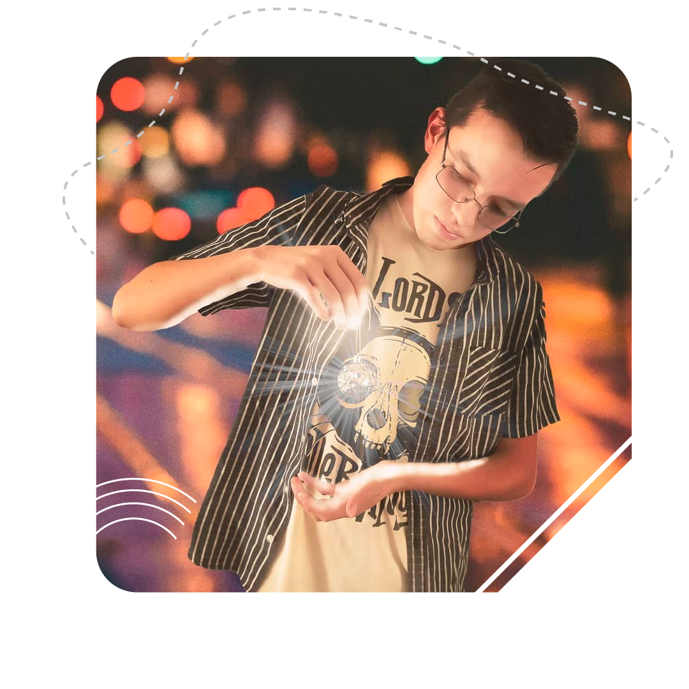

Mi nombre es Angel Luciano, conocido en redes como "Bleck", soy diseñador gráfico digital y desarollador WEB, en mis tiempos libres me dedico a E-sports y ensamble de computadoras, tengo 23 años, comence con el diseño a los 13 años con canales pequeños de youtube, amo lo que hago y simpre